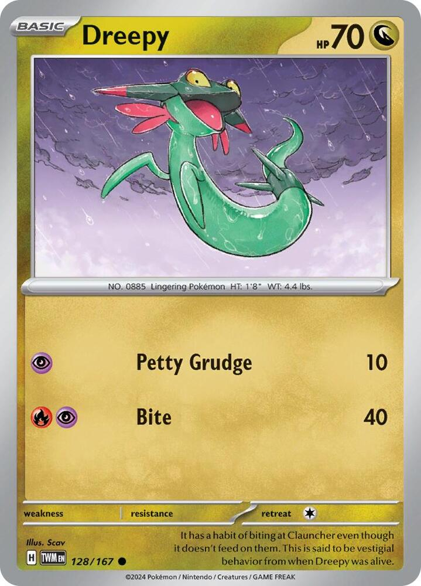
x4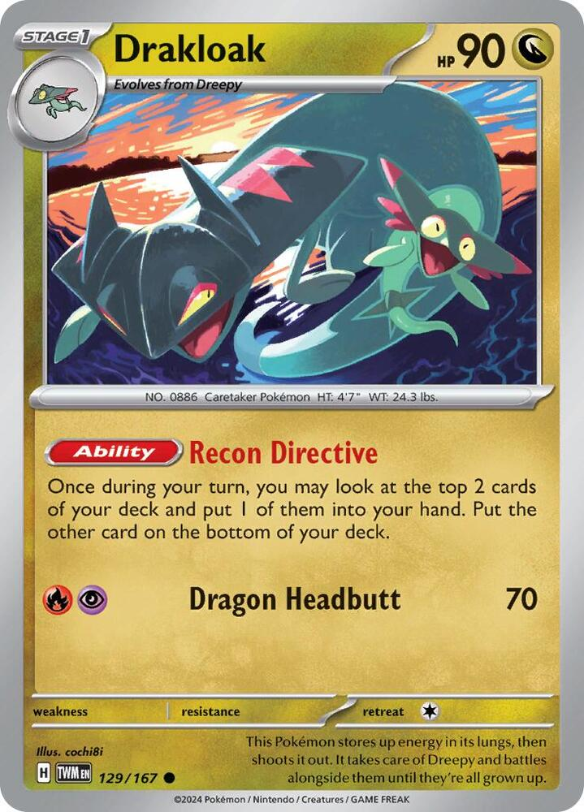
x4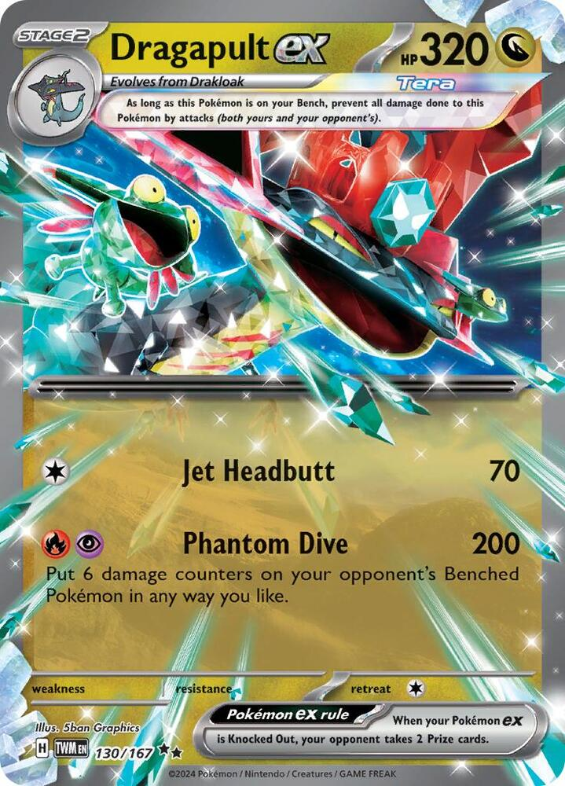
x3 x2
x2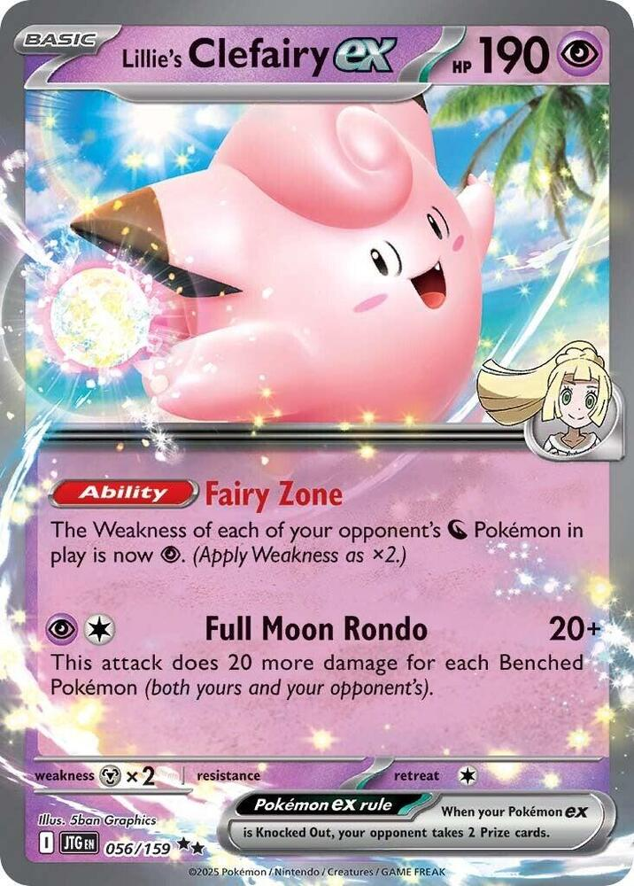
x2
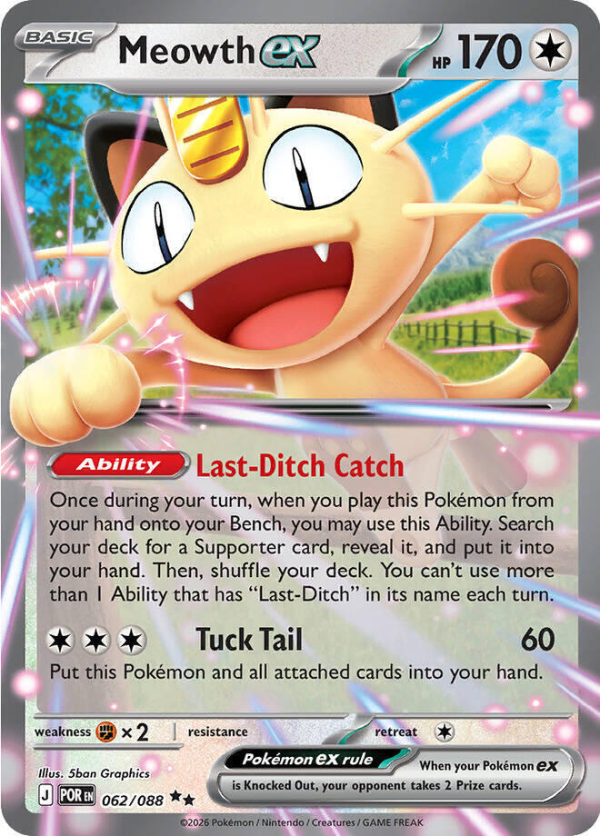
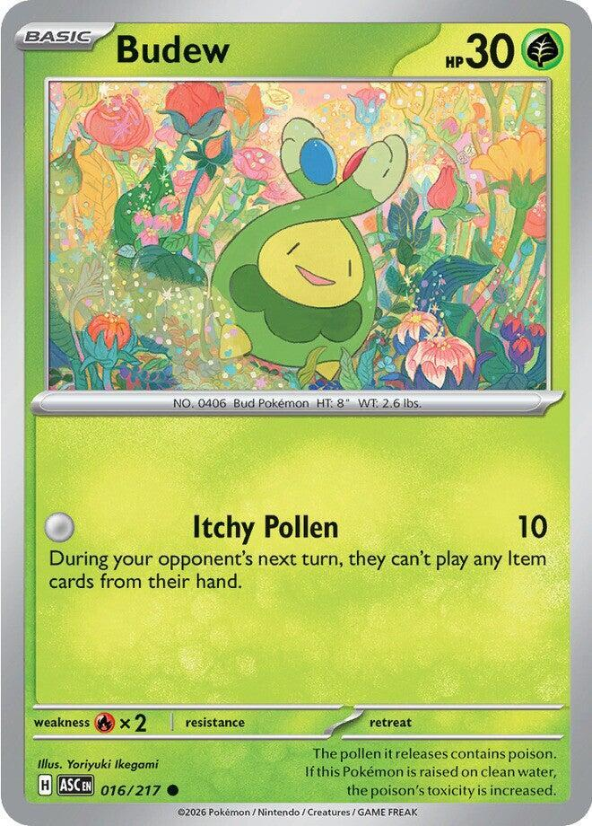

 x4
x4![Boss's Orders [Ghetsis]](./assets/654453_bosss-orders-ghetsis.jpg) x3
x3 x2
x2
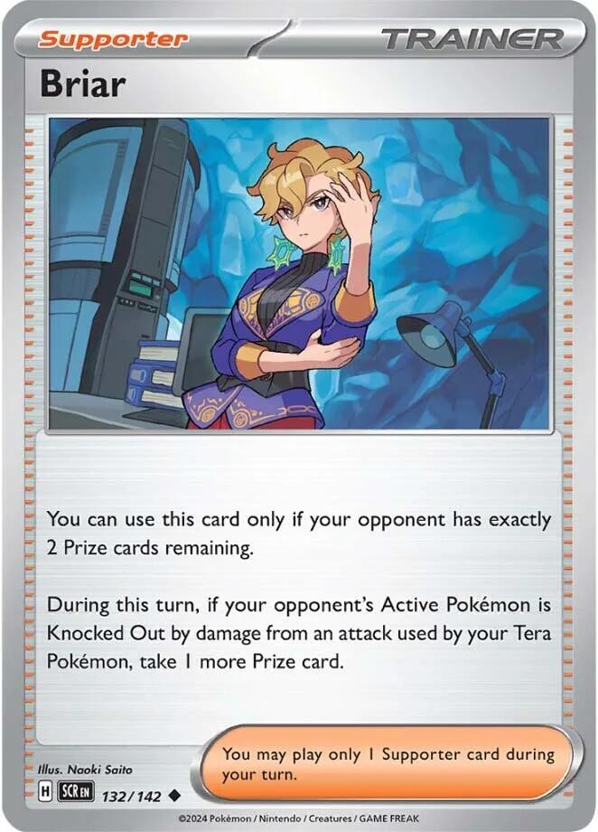
 x4
x4 x4
x4 x4
x4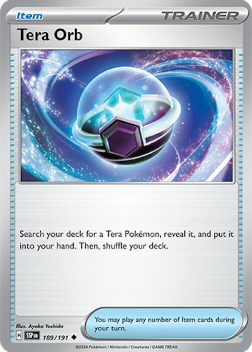
x2 x2
x2


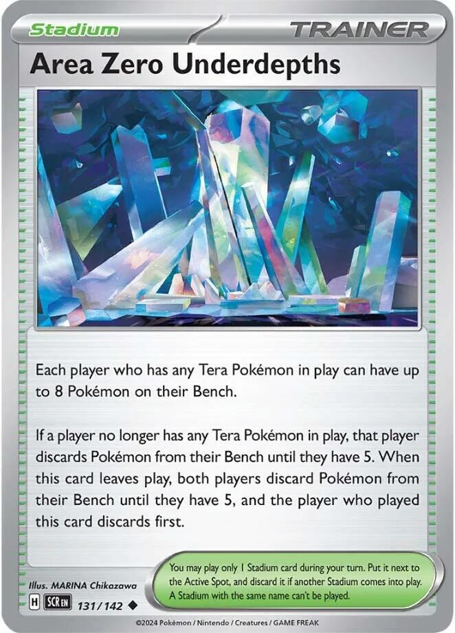
x2
 x3
x3 x3
x3 x2
x2 Crystal Dragons
Crystal Dragons 

Tournament · Phantom Dive for one Energy, four Drakloaks drawing every turn, and a Fairy Zone for the mirror
← back to all decks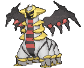
Drakloak is the deck. Dragapult ex is what it evolves into. _Recon Directive_ looks at the top two cards of your deck once a turn, keeps one, and puts the other on the bottom. Four Drakloaks on the Bench is four free card selections every turn before you play a Supporter. That is the engine that emptied my hand on turn three, and it is why every Dragapult list runs the line 4-4 with no Rare Candy: the Stage 1 is the reason to be here, so you evolve through it on purpose and leave the Drakloaks standing.
Phantom Dive is 200 damage plus six damage counters, placed anywhere on their Bench. Two hundred is a two-shot into every ex that matters, so the deck does not race. The sixty a turn of counters is the actual weapon. It pre-kills the 70 HP Basics every evolution deck stands on, softens the next Boss's Orders target, and turns the second Dive into a Knock Out on anything up to 260. Two Dives is 400, and nothing printed has 400 HP.
Sparkling Crystal makes the Dive cost one Energy. Dragapult ex is a Tera Pokémon, and the Crystal's Tera discount takes the cost from Fire plus Psychic down to either one alone. A Dragapult that evolves this turn attacks this turn off a single attachment. A Dragapult that dies took one Energy with it, not two. Crispin's attach alone turns the next one live. Every list at the top tables runs Unfair Stamp in this slot; game plan 2 is why this one does not.
The mirror is a fifth of the room, and Lillie's Clefairy ex owns it. _Fairy Zone_ makes every Dragon Pokémon your opponent has Weak to Psychic. Their Dragapult ex, their Drakloaks, and their Dreepy all take double from Clefairy's _Full Moon Rondo_, from Munkidori's _Mind Bend_, and from Team Rocket's Mimikyu copying their own Phantom Dive back at them for 400. The stock list runs one Clefairy and hopes; this list runs two and a Mimikyu and plans.
| Your attacker | Cost | Into a Dragon under Fairy Zone |
|---|---|---|
| Lillie's Clefairy ex, _Full Moon Rondo_, five Benched a side |   | 440 |
| Team Rocket's Mimikyu copying _Phantom Dive_ | | 400, plus six counters |
| Munkidori, _Mind Bend_ | | 120, which is a Drakloak |
Dragapult ex is 320 HP. Every row kills it, or kills the engine under it, from a body that costs two Energy.
Area Zero Underdepths is the last Tera card, and it is deliberately light. Eight Bench slots while a Tera is in play means the four Drakloaks, two Munkidori, Clefairy, and Fezandipiti all fit at once, and Rondo climbs to 280 without Weakness. Two copies, because the Stadium leaving play costs you three benched Pokémon and you discard first. The sixth, seventh, and eighth seats are a luxury this deck uses when it is ahead, never a plan it depends on.

x4
x4
x3x2
x2

x4x3x2
x4x4x4
x2x2
x2x3x3x2Pokémon (19)
| Qty | Card | Set | Number | Reg |
|---|---|---|---|---|
| 4 | Dreepy | Twilight Masquerade | 128 | H |
| 4 | Drakloak | Twilight Masquerade | 129 | H |
| 3 | Dragapult ex | Twilight Masquerade | 130 | H |
| 2 | Munkidori | Twilight Masquerade | 095 | H |
| 2 | Lillie's Clefairy ex | Journey Together | 056 | I |
| 1 | Fezandipiti ex | Shrouded Fable | 038 | H |
| 1 | Meowth ex | Perfect Order | 062 | J |
| 1 | Budew | Ascended Heroes | 016 | H |
| 1 | Team Rocket's Mimikyu | Destined Rivals | 087 | I |
Trainers — Supporters (11)
| Qty | Card | Set | Number | Reg |
|---|---|---|---|---|
| 4 | Lillie's Determination | Mega Evolution | 119 | I |
| 3 | Boss's Orders [Ghetsis] | Mega Evolution | 114 | I |
| 2 | Crispin | Stellar Crown | 133 | H |
| 1 | Dawn | Phantasmal Flames | 087 | I |
| 1 | Briar | Stellar Crown | 132 | H |
Trainers — Items (17)
| Qty | Card | Set | Number | Reg |
|---|---|---|---|---|
| 4 | Ultra Ball | Mega Evolution | 131 | I |
| 4 | Poke Pad | Perfect Order | 081 | J |
| 4 | Buddy-Buddy Poffin | Temporal Forces | 144 | H |
| 2 | Tera Orb | Surging Sparks | 189 | H |
| 2 | Night Stretcher | Shrouded Fable | 061 | H |
| 1 | Energy Switch | Mega Evolution | 115 | I |
Trainers — Tool & Stadium (5)
| Qty | Card | Set | Number | Reg |
|---|---|---|---|---|
| 1 | Sparkling Crystal | Stellar Crown | 142 | H |
| 1 | Air Balloon | Ascended Heroes | 181 | I |
| 2 | Area Zero Underdepths | Stellar Crown | 131 | H |
| 1 | Risky Ruins | Mega Evolution | 127 | I |
Energy (8)
| Qty | Card | Set | Number | Reg |
|---|---|---|---|---|
| 3 | Basic Fire Energy | Mega Evolution Energies | 002 | - |
| 3 | Basic Psychic Energy | Mega Evolution Energies | 005 | - |
| 2 | Basic Darkness Energy | Mega Evolution Energies | 007 | - |
19 + 11 + 17 + 5 + 8 = 60. ✓
Basics: 12 (4 Dreepy, 2 Munkidori, 2 Lillie's Clefairy ex, Fezandipiti ex, Meowth ex, Budew, Team Rocket's Mimikyu). The mulligan rate is 19%, inside the band. Sparkling Crystal is the ACE SPEC, and the house Prime Catchers stay with the decks that already claim them.

Memorize this section. Everything below it is explanation.
| Attack | Cost | Damage | One-shots at full HP |
|---|---|---|---|
| Dragapult ex, _Phantom Dive_ |  , or either one with the Crystal , or either one with the Crystal | 200, plus 6 counters on their Bench | Pecharunt ex 190, Lillie's Clefairy ex 190, Metagross 180, Meowth ex 170, Dusknoir 160, Tatsugiri ex 160, Toucannon 150, Hariyama 150, Alakazam 140, Dudunsparce 140, Dhelmise 140, N's Reshiram 130, Slowking 120, Munkidori 110, Chi-Yu 110, Froslass 90, Dipplin 90 |
| Dragapult ex, _Jet Headbutt_ | | 70 | Dreepy, Gastly, Drilbur, Beldum, Hoothoot, Torchic, Budew, and any 70 HP Basic |
| Lillie's Clefairy ex, _Full Moon Rondo_ | | 20, plus 20 per Benched Pokémon on both sides | 220 with five a side: Genesect ex 220, Iron Leaves ex 220, every Ogerpon ex 210, Latias ex 210, Fezandipiti ex 210. 280 with your Bench at eight: N's Zoroark ex 280, Team Rocket's Mewtwo ex 280, Sylveon ex 270 |
| Munkidori, _Mind Bend_ | | 60, and their Active is Confused | Budew, and the counters finish anything else |
| Team Rocket's Mimikyu, _Gemstone Mimicry_ | | whatever their Active Tera's attack does | a copied _Phantom Dive_ is 200 plus 6 counters |
| Fezandipiti ex, _Cruel Arrow_ | | 100 to any one Pokémon | Drakloak 90, Dusclops 90, Froslass 90, every 70 HP Basic |
| Anything Psychic into a Dragon under Fairy Zone | doubled | Rondo 440, a copied Dive 400, Mind Bend 120. Dragapult ex 320, Raging Bolt ex 240, Drakloak 90, Dreepy 70 |
Phantom Dive is Dragon-type damage, so Fairy Zone never doubles it. The Zone is for the three Psychic bodies, and the Dive is for everything else.
The counters are the real attack. Six a turn, placed anywhere on their Bench in any split. Sixty on a Duskull or a Budew is a Knock Out and a Prize before your opponent's turn starts. Sixty on a 70 HP Dreepy or Gastly leaves it on 10, and the next Dive's first counter finishes it. Two Dives of counters is 120, which is a Drakloak, a Metang, a Munkidori, or a Dusclops. Counters ignore Weakness, Resistance, and the Tera Bench rule; the only things that stop them are Battle Cage and the Hide 'n' Sneak Ability.
Two-hit lines. Dive then Dive is 400, and the biggest body in Standard is Mega Venusaur ex at 380. Dive then Rondo at five a side is 420. Dive into a target already carrying two turns of counters is a 320 kill, which is Dragapult ex, Blaziken ex, and Marnie's Grimmsnarl ex. A Dive's counters plus Mind Bend is 120 on the Bench in one turn, without Weakness.
Risky Ruins adds 20 to every non-Darkness Basic that hits either Bench. On theirs it turns a 70 HP Basic into a one-Dive kill on the Bench. On yours it hands Munkidori ammunition; see Munkidori.
Your HP: Dragapult ex 320, Fezandipiti ex 210, Lillie's Clefairy ex 190, Meowth ex 170, Munkidori 110, Drakloak 90, Dreepy 70, Team Rocket's Mimikyu 60, Budew 30. Dragapult ex is a Dragon and has no Weakness of its own; the one way it gains one is an opposing Clefairy's Fairy Zone. While it sits on your Bench it takes no damage from attacks at all, yours or theirs, though damage counters still land.
| Their attack | Damage | What it kills |
|---|---|---|
| Mega Excadrill ex, _Maximum Drilling_ with 5 Energy | 330 | Dragapult ex. The one common attack that one-shots it. Count the Energy on the Drilbur before you commit a Dive; two-shot the Mega before it reaches five, or Boss the Drilbur. |
| Metagross with Brave Bangle, _Metallic Hammer_ | 330 into an ex | Dragapult ex, from a one-Prize body. Fox's Metal deck runs it. |
| Dragapult ex, _Phantom Dive_ | 200, plus 6 counters | Clefairy or Meowth in front. Budew and Mimikyu die to the counters alone; a Dreepy survives one Dive on 10 and dies to the next. Fezandipiti survives a Dive on 10. |
| Lillie's Clefairy ex, _Full Moon Rondo_ under their Fairy Zone | 20 plus 20 per Benched, doubled | 440 into Dragapult ex at five a side. Your Area Zero Bench makes it worse. Kill their Clefairy first, and keep your Bench at five in the mirror. |
| Dhelmise, _Vengeful Anchor_ under their Fairy Zone | 170, doubled to 340 | Dragapult ex. The Hide 'n' Sneak deck, and its Pokémon are immune to your counters. |
| Mega Gengar ex, _Void Gale_ | 230 | Clefairy, Meowth, Fezandipiti, and every small body. Dragapult survives on 90 and dies to the second. |
| Blaziken ex, _Smolder-sault_ | 200 | Clefairy and Meowth. It cannot attack the next turn. |
| Marnie's Grimmsnarl ex, _Shadow Bullet_ | 180, plus 30 to one bencher | Meowth. The 30 finishes a Mimikyu or Budew. |
| Toucannon, _Feather Rondo_ | 60, plus 20 per Benched on both sides | 260 at five a side. 320 if your Bench is at eight. Area Zero stays in the deck against Toucannon. |
| Dusknoir, _Cursed Blast_ (Ability) | 13 counters | Munkidori, Drakloak, Dreepy, Mimikyu, Budew. Never Dragapult, Clefairy, Meowth, or Fezandipiti. |
| Alakazam, _Powerful Hand_ | 2 counters per card in their hand | A seven-card hand is 140: any Drakloak or Munkidori. |
| Mega Chandelure ex, _Phantom Maze_ | 130, plus 50 per Colorless in your Retreat Cost | Dragapult retreats for one, two under _Binding Flame_: 230. With Air Balloon attached it is 180. |
| Mega Lucario ex, _Mega Brave_ | 270 | Everything but Dragapult, which survives on 50. |
| Hariyama, _Wild Press_ | 210 | Clefairy, Meowth, Fezandipiti. Dragapult survives on 110. |
Their six: Dragapult ex, Lillie's Clefairy ex, Fezandipiti ex, and Meowth ex pay two apiece; everything else pays one. Three ex Knock Outs is their game, and the Tera Bench rule means the Dragapult they want is only ever the one in front. Your six against an ex deck is three Knock Outs, and against a single-prize room it is six, which is where the counters earn their keep: a Dive that kills the Active and a benched Basic is two Prizes in one attack.
Briar is the one-card comeback. When your opponent is down to exactly two Prizes, a Knock Out by your Tera Pokémon that turn takes one more. At three Prizes left, a Dive that kills any ex wins the game on the spot.
| By | Cards seen | Dragapult ex, or a card that finds it | Drakloak or Poke Pad | Sparkling Crystal | Either Clefairy |
|---|---|---|---|---|---|
| Turn 1, going second | 8 | 79% | 71% | 13% | 25% |
| Turn 2, going second | 9 | 83% | 75% | 15% | 28% |
| Turn 3 | 10 | 86% | 79% | 17% | 31% |
| Turn 4 | 11 | 89% | 82% | 18% | 34% |
Ten cards find a Dragapult: the three copies, four Ultra Ball, two Tera Orb, and Dawn. Eight find a Drakloak: four copies and four Poke Pad. The opening seven holds a Dreepy or a Poffin 65% of the time and a Dreepy, Poffin, Poke Pad, or Ultra Ball 90% of the time. At least one Dragapult ex is in the Prizes 28% of games, which is why there are three; all three are prized in one game in sixteen hundred.
The Crystal column is the honest weakness. Nothing in the deck searches a Tool, so the Crystal arrives when Recon Directive and Lillie's find it, and the deck is built to Dive for two Energy until it does. The Crystal is the upgrade to a plan that already works, not the plan.


 Dragon1
Dragon1 legal (Reg H)Petty Grudge (10)
legal (Reg H)Petty Grudge (10) Bite (40)
Bite (40)Four copies, the Twilight Masquerade print, and its whole job is becoming a Drakloak. 70 HP puts it inside Buddy-Buddy Poffin's range, and Dragon typing means Risky Ruins puts two counters on it when it lands. _Petty Grudge_ does 10 for one Psychic and you will attack with it exactly never; _Bite_ is 40 for the Dive's cost and exists to remind you that the Energy on a Dreepy is Energy on the future Dragapult.
Bench two on turn one, always. Poffin fetches two, Dawn fetches one, Poke Pad fetches one, and Ultra Ball fetches one. Four Dreepy is not a count you thin, because every Dreepy that dies before evolving is a Drakloak the engine never gets.
Against another Dragapult, a benched Dreepy is on 10 after one Dive and dead after the next, so evolve it the turn you legally can. Against Dusknoir, thirteen counters kill it outright.
Dragon1legal (Reg H)Dragon Headbutt (70)The engine, and the card that costs the most to lose. 90 HP, Stage 1, Dragon, and _Recon Directive_: once during your turn, look at the top two cards of your deck, put one into your hand, and put the other on the bottom. Once per copy. Four Drakloaks standing is four looks at two cards every turn, which is eight cards seen and four kept before your Supporter, and it never touches your hand.
Read the second half of the text. The card you do not take goes to the bottom, not back into the shuffle. Four Recons a turn churns the deck forward, so the Lillie's you shuffle into is a better deck every turn.
Four copies, and none of them Rare Candy. This is the line philosophy the card forces: a Stage 1 with the best Ability in the deck has to be evolved into, not skipped. Dawn's Stage 1 slot and four Poke Pad find it, and _Dragon Headbutt_ is 70 for the Dive's cost if a Drakloak ever has to fight.
90 HP is the number the opponent aims at. Cruel Arrow kills one from the Bench for 100, Dusknoir's thirteen counters kill one, two Dives of counters kill one. Lose a Drakloak and the deck slows a card a turn; lose two and you are playing a normal deck. Game plan 6 has the Bench discipline.
 Dragon1legal (Reg H)Jet Headbutt (70)Phantom Dive (200) - Put 6 damage counters on your opponent's Benched Pokémon in any way you like.
Dragon1legal (Reg H)Jet Headbutt (70)Phantom Dive (200) - Put 6 damage counters on your opponent's Benched Pokémon in any way you like.Stage 2 from Drakloak. Gives up 2 Prize cards. 320 HP, Dragon, Tera, Retreat 1, and no Weakness. Three copies, because one is prized 28% of games and the deck wants a second standing before the first falls.
_Phantom Dive_ is for 200, then put six damage counters on your opponent's Benched Pokémon in any way you like. The placement is yours: six on one target, or spread across three, or two each on the three 70 HP Basics they benched on turn one. Placed counters are not attack damage, so they ignore Weakness, Resistance, the opposing Tera Bench rule, and Mega Gengar's _Shadowy Concealment_. The deck wins by the counters and closes by the 200.
_Jet Headbutt_ is for 70. It is the attack when the Crystal is not down and only one Energy is attached. Seventy kills any 70 HP Basic, and a fresh Dragapult that Headbutts a Dreepy on the turn it evolves is still a Prize.
The Tera rule. While this Pokémon is on your Bench, prevent all damage done to it by attacks, both yours and your opponent's. Cruel Arrow, Shadow Bullet, and Wellspring's Torrential Pump bounce off a benched Dragapult. Damage counters do not, so Dusknoir and an opposing Dive still reach it.
Three ways to power it. The turn-by-turn is game plan 1. The short version: one attachment on the Dreepy on turn one, one on the Drakloak on turn two, and it Dives on turn three the moment it evolves. With Sparkling Crystal attached it Dives off either Energy alone. Energy Switch moves a Basic Energy from a wounded Dragapult to the next one before the Knock Out, and Crispin's attach lands directly on the Stage 2 that needs it.
What kills it. Maximum Drilling at five Energy, Metagross with a Brave Bangle, and any Psychic attack under an opposing Fairy Zone that reaches 160. Everything else needs two turns, and the second Dragapult arrives in one.
 Psychic
Psychic Darkness ×2Fighting -301legal (Reg H)Mind Bend (60) - Your opponent's Active Pokémon is now Confused.
Darkness ×2Fighting -301legal (Reg H)Mind Bend (60) - Your opponent's Active Pokémon is now Confused.The counter mover. 110 HP Basic, Psychic, and _Adrena-Brain_: once during your turn, if this Pokémon has any Darkness Energy attached, move up to three damage counters from one of your Pokémon to one of your opponent's Pokémon. Once per copy, so two Munkidori with a Dark Energy apiece is sixty damage a turn moved off your board and onto theirs.
Three sources feed it. The opposing Dive's counters on your Bench, which Adrena-Brain throws straight back. Your own Risky Ruins, which puts two counters on every non-Darkness Basic you bench, so a Dreepy, a Clefairy, or a Mimikyu hitting the Bench is twenty for Munkidori to move. And Alakazam, Dusknoir, or Froslass doing your opponent's work for them.
_Mind Bend_ is for 60 and Confuses their Active. Flat, it is a finisher for a body carrying counters. Under Fairy Zone it is 120, which is a Drakloak, and killing Drakloaks is how the mirror is won.
Two copies because it is two Abilities, not one. The two Basic Darkness Energy in the list are for these two cards and nothing else.
 Psychic
Psychic Metal ×21legal (Reg I)Full Moon Rondo (20+) - This attack does 20 more damage for each Benched Pokémon (both yours and your opponent’s).
Metal ×21legal (Reg I)Full Moon Rondo (20+) - This attack does 20 more damage for each Benched Pokémon (both yours and your opponent’s).The mirror card, and the reason this list runs two. 190 HP Basic, Psychic, two Prizes. "Lillie's" is part of the name; it is not a Clefairy and nothing that says Clefairy touches it.
_Fairy Zone_: the Weakness of each of your opponent's Dragon Pokémon in play is now Psychic, applied as ×2. It works from the Bench, it covers every Dragon they own at once, and it makes three of your bodies into Dragon slayers. Your own Dragapult is unaffected, because Fairy Zone reads your opponent's Pokémon.
_Full Moon Rondo_ is for 20, plus 20 for each Benched Pokémon on both sides. Five a side is 220. Eight on yours under Area Zero and five on theirs is 280. Into a Dragon under the Zone, double it: 440 or 560, and Dragapult ex is 320. Rondo is also the deck's best flat number against wide boards: 220 kills every Ogerpon, Latias ex, Fezandipiti ex, and Genesect ex without Weakness.
Two copies because one is prized in 10% of games, because the second one comes down after the first is Bossed and killed, and because against a Dragon deck this card is the plan. Against everything else, one Clefairy on the Bench is a 220 Rondo that costs two Energy, and the second stays in the deck.
Their Clefairy does the same to you. Game plan 3 is the whole mirror.
 DarknessFighting ×21legal (Reg H)Cruel Arrow - This attack does 100 damage to 1 of your opponent's Pokémon. (Don't apply Weakness and Resistance for Benched Pokémon.)
DarknessFighting ×21legal (Reg H)Cruel Arrow - This attack does 100 damage to 1 of your opponent's Pokémon. (Don't apply Weakness and Resistance for Benched Pokémon.)The draw after a Knock Out. 210 HP Basic, Darkness, two Prizes. _Flip the Script_: once during your turn, if any of your Pokémon were Knocked Out during your opponent's last turn, draw three cards. This deck trades bodies every turn from turn three onward, so it fires most turns of the midgame.
_Cruel Arrow_ is for 100 to any one of their Pokémon, Weakness and Resistance aside on the Bench. It is the attack that kills a Drakloak, a Dusclops, or a Froslass on their Bench when the Dive's counters have not reached it yet, and it takes any three Energy.
One copy, shared with the lantern deck. It is a two-Prize body and the deck already has four of those; one is the count that draws without becoming the opponent's easiest target.
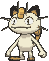
 ColorlessFighting ×21legal (Reg J)Tuck Tail (60) - Put this Pokémon and all attached cards into your hand.
ColorlessFighting ×21legal (Reg J)Tuck Tail (60) - Put this Pokémon and all attached cards into your hand.Search a Supporter for free. 170 HP Basic, Colorless, two Prizes. _Last-Ditch Catch_: once during your turn, when you play this Pokémon from your hand onto your Bench, search your deck for a Supporter card and put it into your hand. Bench it turn one for Lillie's Determination, or on the turn a Boss's Orders wins the game.
_Tuck Tail_ is for 60 and puts this Pokémon and everything attached back into your hand, which resets the Ability for another Catch later. You will rarely have three Energy to spare for it.
One copy. It is Colorless, so an opposing Team Rocket's Watchtower turns the Ability off while it is on the board. Play Meowth before the Stadium war starts, not after.


 GrassFire ×2legal (Reg H)
GrassFire ×2legal (Reg H)The turn-one Item lock. 30 HP Basic, Grass, one Prize, and _Itchy Pollen_ costs no Energy at all: 10 damage, and your opponent can't play Item cards from hand during their next turn. Going second, Budew in the Active Spot on turn one shuts off their Poffins, Ultra Balls, and Rare Candy for the turn their setup needed them, while your Drakloaks are already drawing. It is the play that beat me, and it is the play this deck makes back.
One copy, because it does its job once and then dies for a Prize, and the second copy the stock list runs became a Mimikyu. Poffin fetches it, and it is the body you promote when the alternative is a Drakloak.

 PsychicDarkness ×2Fighting -30legal (Reg I)Gemstone Mimicry - Choose 1 of your opponent's Active Tera Pokémon's attacks and use it as this attack.
PsychicDarkness ×2Fighting -30legal (Reg I)Gemstone Mimicry - Choose 1 of your opponent's Active Tera Pokémon's attacks and use it as this attack.The mirror tech nobody expects. 60 HP Basic, Psychic, one Prize, Poffin range. "Team Rocket's" is part of the name, and nothing else in this deck is Team Rocket's; the card wants no brand engine, only a target.
_Gemstone Mimicry_ is : choose one of your opponent's Active Tera Pokémon's attacks and use it as this attack. You pay Mimikyu's cost, not the copied attack's. When their Dragapult ex Dives and stays in front, Mimikyu copies Phantom Dive: 200 damage, six counters on their Bench, and Mimikyu is Psychic, so under your Fairy Zone the 200 is 400. A one-Prize 60 HP Basic Knocks Out their two-Prize 320 HP attacker and spreads sixty on their Bench in the same attack.
It also copies any other Tera they lead with: Terapagos ex's Unified Beatdown counts your Bench, Cinderace ex's Flare Strike is 280, an Ogerpon's attack is whatever it prints. It does nothing at all against a deck with no Tera Pokémon, and that is fine; it is one slot, the Destined Rivals copy is already in the binder, and it dies to anything for one Prize.
One copy. Prized one game in ten, and the deck has two other Fairy Zone attackers when it is.
 legal (Reg I)
legal (Reg I)The draw Supporter, at the full four. Shuffle your hand into your deck and draw 6, or 8 while all six of your Prizes are still up. Four Recons a turn make every Lillie's better, because the deck you shuffle into has already had its worst cards sent to the bottom. Play the Items first; what they find changes whether you want to shuffle.
Full entry in Gengar Gang Classic.
The gust, at three. Switch in one of their Benched Pokémon to the Active Spot. Three because the deck has no Prime Catcher, and because the Dive's counters make Boss's Orders into a Prize every time: the target that took sixty last turn is the target you drag up and finish. Against a Dragapult, Boss their Clefairy before it Rondos you. Against the counter decks, Boss the Duskull before it becomes thirteen counters.
Full entry in Gengar Gang Classic.
 legal (Reg H)
legal (Reg H)The Energy Supporter, and the reason the deck runs eight Energy. Search your deck for up to two Basic Energy of different types, put one into your hand, and attach the other to one of your Pokémon. Fire to the Dragapult, Psychic to the hand, and Phantom Dive is paid over one Supporter instead of two attachments. With the Crystal down, the attached half alone is a live Dive and the hand half is next turn's Clefairy.
Two copies, shared with the lantern deck. Fetch Darkness as the second type when a Munkidori needs switching on.
 legal (Reg I)
legal (Reg I)Search your deck for a Basic, a Stage 1, and a Stage 2, and put them into your hand. Here that is Dreepy, Drakloak, and Dragapult ex in one card, the entire line. One copy, because the four Poke Pad already do the Drakloak half and the turn-two Dawn is usually the turn you would rather Lillie's. It is the Supporter that turns a hand with no line into a board.
Full entry in Gengar Gang Classic.
legal (Reg H)You can use this card only if your opponent has exactly 2 Prize cards remaining. During this turn, if their Active is Knocked Out by damage from an attack used by your Tera Pokémon, take one more Prize card.
The comeback. The games this deck loses are the ones where it fell behind on the Prize trade early, and Briar buys one Prize back at exactly the moment it matters: you are at three, they are at two, a Dive kills any ex, and you take three. One copy, and hold it. Playing Briar on the wrong turn is a dead Supporter; playing it on the right one is the game.
legal (Reg I)Discard two other cards from your hand, then search your deck for any Pokémon. Four copies, and it is the Item that finds a Dragapult ex, a Clefairy, or the Fezandipiti; Poke Pad cannot see a Rule Box. Pitch spare Energy and dead Dreepy; Night Stretcher brings the Energy back.
legal (Reg J)Search your deck for a Pokémon that doesn't have a Rule Box and put it into your hand, for free. Twelve of the nineteen Pokémon here qualify: Dreepy, Drakloak, Munkidori, Budew, and Mimikyu. Four copies, because four Poke Pad plus four Drakloak is eight cards that put a Drakloak in hand, and Drakloaks on the Bench are the deck.
 legal (Reg H)
legal (Reg H)Search your deck for up to two Basic Pokémon with 70 HP or less and put them onto your Bench. Dreepy is 70, Mimikyu is 60, Budew is 30. Four copies. Turn one wants Poffin first, for two Dreepy; the second Poffin gets the third Dreepy and the Budew or Mimikyu the matchup wants. Munkidori at 110 and every ex here are out of range, and that is what Ultra Ball is for.
Full entry in Gengar Gang Classic.
 legal (Reg H)
legal (Reg H)Search your deck for a Tera Pokémon and put it into your hand. In this deck that is a Dragapult ex, and only a Dragapult ex, for zero cards of hand. Two copies, so the count of cards that find the Stage 2 is ten without discarding anything. The stock list runs Crushing Hammers in these slots; Alternatives has that argument.
legal (Reg H)Put a Pokémon or a Basic Energy card from your discard pile into your hand. Two copies. The priority: a Knocked Out Dragapult ex first, a Drakloak second, a Basic Energy third when the Ultra Balls pitched too many. Nothing here is Special Energy, so every Energy in the discard is a legal target.
Full entry in Gengar Gang Classic.
legal (Reg I)Move a Basic Energy from one of your Pokémon to another. One copy, and it does three things. It moves the Fire off a Dragapult that is about to die onto the one behind it. It moves a Psychic onto a Clefairy for a Rondo the opponent did not count on. And on the turn the Crystal is down, it moves an Energy from a Drakloak onto the fresh Dragapult so it Dives the turn it evolves.
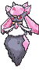
 ACE SPEC Rarelegal (Reg H)
ACE SPEC Rarelegal (Reg H)The ACE SPEC. A Pokémon Tool: when the Tera Pokémon this card is attached to uses an attack, that attack costs one Energy less, of any type. Attach it to a Dragapult ex and Phantom Dive costs one Fire or one Psychic. Jet Headbutt costs nothing.
What that buys, in order. A Dragapult that evolves this turn Dives this turn off the Energy its Dreepy carried. A Knocked Out Dragapult cost one Energy, so the deck's eight last twice as long. Crispin's attach alone is a live Dive. And Nighttime Mine, the anti-Tera Stadium that adds a Colorless to every Tera attack, is cancelled to zero.
The costs, stated plainly. It is one card in sixty with nothing that searches it, so it arrives about a third of games by turn four; the deck Dives for two Energy until then. It is a Tool, so Tool Scrapper removes it and an opposing Jamming Tower switches it off, which is why this list has no Jamming Tower of its own. And it is the ACE SPEC slot, so Unfair Stamp is not here. Game plan 2 and Alternatives are the full argument.
Attach it to the Dragapult you intend to keep, not the first one. A Crystal on a Dragapult that dies next turn is a Crystal in the discard with no way back.
legal (Reg I)The Retreat Cost of the Pokémon it is attached to is two less. Dragapult retreats for one already, so the Balloon's job is the two matchups where that one matters: Mega Chandelure's _Binding Flame_ adds one to your Active's Retreat Cost and _Phantom Maze_ charges 50 per Colorless in it, and the Balloon takes 230 down to 180. Otherwise it goes on whichever Clefairy or Munkidori has to step back after attacking. One copy, and Jamming Tower turns it off.
legal (Reg H)The Stadium that grows the Bench, and the one that shrinks it. Each player with a Tera Pokémon in play can have up to eight Pokémon on their Bench. If a player no longer has a Tera in play, they discard down to five. When this card leaves play, both players discard down to five, and the player who played it discards first.
What eight seats buy: four Drakloaks, two Munkidori, a Clefairy, and a Fezandipiti all standing at once, with the Active Dragapult in front. Rondo climbs to 280 flat. Poffin never has to choose. And it bumps an opposing Team Rocket's Watchtower or Jamming Tower off the table, which switches your Meowth and your Crystal back on.
What it costs: the moment they drop a Stadium of their own, you discard three benched Pokémon, and you choose which. Only go past five when the sixth seat is winning the game, and never against Toucannon or an opposing Clefairy, because both count your Bench. Two copies so the second wins the Stadium war the first started.
Dragapult is your only Tera. When your last Dragapult leaves play with Area Zero down, the Bench comes down to five with it. Keep that in mind before benching the eighth.
legal (Reg I)Whenever any player puts a Basic non-Darkness Pokémon onto their Bench, place two damage counters on it. One copy, and it cuts both ways on purpose. On their side it turns every 70 HP Basic into a one-Dive Bench kill and every 90 into a Dive-plus-Mind-Bend kill. On yours it puts twenty on each Dreepy, Clefairy, Meowth, Budew, and Mimikyu you bench, which is exactly the ammunition Adrena-Brain moves back across the table. Fezandipiti is Darkness and takes nothing.
One rather than the stock list's two because the two Area Zero already fight the Stadium war, and three Stadiums plus a Tool is enough cards that do nothing in hand.
Full entry in Gengar Gang Classic.
legalThree. Half of Phantom Dive's printed cost, and the half nothing else in the deck uses. With the Crystal down a Dragapult Dives on Fire alone, so the three Fire are three Dives that owe nothing to the Psychic count.
legalThree. The other half of the Dive, and the whole of Rondo, Mind Bend, and Gemstone Mimicry. Psychic is the Energy every attacker in the deck can use, so when Crispin offers a choice of which type goes to hand, Psychic goes to hand.
legalTwo, and they are Munkidori's switches, not attack costs. One Darkness attached is what turns Adrena-Brain on, and two Munkidori want one each. Cruel Arrow takes them as Colorless in a pinch.
Eight Energy total is low on purpose. Crispin adds two a use, the Crystal halves the Dive, Energy Switch recycles what is already on the board, and Night Stretcher pulls one back from the discard. The stock lists run eight or nine with four Crushing Hammers; this list runs eight with none, and Test and Tune watches the count first.
How 200 becomes six Prizes.
Turn one. Poffin for two Dreepy. Energy on a Dreepy. Meowth if it is in hand, for a Lillie's. Going second, Budew Active and _Itchy Pollen_ instead of a Dreepy; the Item lock is worth more than the 10.
Turn two. Evolve both Dreepy into Drakloaks and Recon twice. Energy on the Drakloak that carries the first Energy. Poffin or Poke Pad for the third and fourth Dreepy. Lillie's if the hand is thin.
Turn three. Evolve a Drakloak into Dragapult ex. It has two Energy from the Dreepy and Drakloak it grew through, so it Dives now: 200 into the Active, six counters onto their Bench. Aim the counters at the Basics under their evolution line, sixty on one if it kills, twenty each on three if they are all 70 HP and Risky Ruins already put twenty on them.
Turn four and on. Dive again. The Active took 200 last turn; if it is still standing it dies now. Whatever took counters last turn is a Boss's Orders away from a second Prize. Behind the front Dragapult, the next Drakloak carries an Energy and waits.
The counter placement rule. Kill something every turn with the counters if anything on their Bench is at 60 or less. If nothing is, put all six on the one body you intend to Boss up next turn, so the Dive that follows is a 260 kill. Spreading twenty across three healthy bodies feels clever and wastes a turn.
Two Dragapults, always. The second one is evolving while the first one fights, and it inherits the Crystal's job if the first one dies. A Dragapult with no Drakloak behind it is the last Dive you get.
Why this slot is not Unfair Stamp, and how to play it when it lands.
The stock list's Unfair Stamp reads: after one of yours was Knocked Out, both players shuffle their hands, you draw five and they draw two. It is the strongest ACE SPEC in the format for a deck that trades bodies, and this list does not run it, for three reasons. It costs fifteen dollars, which is most of the deck. It is at its best in the hands of a player who already knows when a two-card hand ends the game, and this deck has to be learned first. And the Crystal solves the problem this deck actually has, which is Energy delivery, not card disruption.
Where the Crystal goes. On the second Dragapult, not the first. The first one takes the return hit; the second one is the one that stands for three turns, and a Crystal that lives three turns has saved three Energy. If the first Dragapult is the only one you will see this game, put it there and Dive off one Energy from turn three.
What one-Energy Dives change. Crispin's attach is a Dive on its own. A Dragapult that evolves the turn a Boss's Orders kills the previous one Dives immediately off the Energy Switch. Eight Energy last twice as long, so the late game has Psychic for Rondo and Mind Bend instead of choosing between them and the Dive.
What takes it away. Tool Scrapper discards it. Jamming Tower switches it off while the Stadium stands, and Area Zero bumps the Tower. An opposing Genesect with a Tool attached stops you playing it from hand at all. When any of those show up, the deck Dives for two, exactly as the stock list does every game.
The habit. Recon Directive is looking at two cards a Drakloak a turn. When the Crystal is one of them, take it, every time, over an Energy or a Dreepy. It is the one card in the deck nothing else finds.
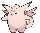
The mirror is a fifth of the room. This is how you win it.
Both decks want the same thing: Drakloaks standing, a Dragapult Diving, and sixty counters a turn on the other Bench. The one who kills the other's engine first wins, and this list has three cards built for exactly that.
Get Clefairy down early, and get it down on the Bench. Fairy Zone works from the Bench, and the moment it is in play their Dragapult ex, their Drakloaks, and their Dreepy are Weak to Psychic. Do not lead with it; it is 190 HP and dies to their Dive.
Kill the Drakloaks. Mind Bend under the Zone is 120, which is a Drakloak, for a Munkidori that costs two Energy and one Prize. Cruel Arrow is 100 into a Drakloak without needing the Zone. The Dive's counters are 60 a turn on their Bench and 120 over two turns. Every Drakloak they lose is a card a turn they stop seeing, and a deck seeing two fewer cards a turn than yours loses.
Kill the Dragapult with a small card. When their Dragapult Dives and stays in front, Mimikyu copies Phantom Dive for 400 under the Zone and spreads six counters on the way, from a body worth one Prize. If Mimikyu is prized or dead, Rondo at five a side is 440. Either one trades one or two Prizes for their two and their attacker.
Their Clefairy does the same to you. Their Fairy Zone puts a Psychic Weakness on your Dragapult, and their Rondo at five a side is 440 into it. Boss their Clefairy the turn it lands and Dive it: 190 HP dies to 200. Until it is dead, keep your Bench at five, because every seat you add is 40 more Rondo damage against you.
Watch the Watchtower. Their Team Rocket's Watchtower switches off your Meowth and their own; it does nothing to Drakloak, Munkidori, or Clefairy, which are not Colorless. Your Area Zero bumps it.
Budew going second is the tempo swing. A turn-one Item lock costs them the Poffin turn their line depends on, and the mirror is decided by whose Drakloaks stand first.
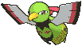
You do not know the field. Their first two turns tell you which deck this is, and where the counters go.
| What they bench | Deck | Where the counters go | Your closer |
|---|---|---|---|
| Dreepy, Drakloak | Dragapult | The Drakloaks, 90 each | Clefairy down, then Mimikyu or Rondo into the Dragapult. Game plan 3. |
| Dreepy plus Duskull | Dragapult Dusknoir | The Duskull, 60, dead to one Dive | Boss the Dusclops before it evolves. Their thirteen counters kill your Drakloaks; keep two. |
| Dreepy plus Torchic | Dragapult Blaziken | Torchic 70, Combusken 100 | Smolder-sault is 200 and skips a turn; Dive the Blaziken twice on its rest turn. |
| Drilbur, Metal Energy | Mega Excadrill | Drilbur 70, one Dive under Ruins | Two Dives before the Mega reaches five Energy. At five, Maximum Drilling is 330 and your Dragapult dies. Boss the loaded Drilbur early. |
| Applin, Dipplin, Festival Grounds | Festival Lead | Applin 40, dead to four counters | Dive kills Dipplin at 90 and Seaking at 110 outright. Bump Festival Grounds with Area Zero. |
| Slowpoke | Slowking | Slowpoke, then Slowking 120 | Dive kills Slowking. Single-prize room; six Knock Outs, so the counters do the Prize math. |
| Abra, Dunsparce | Alakazam Dudunsparce | Abra and Kadabra | Powerful Hand is two counters per card in their hand; keep your Drakloaks above 140 by killing Alakazam at 140 with one Dive. |
| N's Zorua, N's Darmanitan | N's Zoroark | Zorua 70 | Zoroark ex is 280: Dive then Rondo, or Dive into carried counters. |
| Impidimp, Snorunt | Grimmsnarl Froslass | Snorunt 60 or 70, Impidimp 70 | Froslass ticks every Ability Pokémon a counter a turn: Drakloak, Munkidori, Clefairy, Fezandipiti, Meowth. Kill Froslass first; 90 HP. |
| Dhelmise, Shuppet, Poltchageist | Hide 'n' Sneak | Nowhere. The Ability blanks your counters. | Dive the Dhelmise for 200 into 140 before their Clefairy lands; under their Zone Vengeful Anchor is 340 into you. Boss their Clefairy. |
| Pikipek | Toucannon | Pikipek 70 | Feather Rondo counts your Bench. Stay at five, leave Area Zero in the deck, Dive Toucannon at 150. |
| Riolu, Fighting Energy | Mega Lucario or Lucario Hariyama | Riolu 70 or 80 | Nothing you own is Fighting-weak but Meowth. Mega Brave 270 leaves Dragapult on 50; Dive it twice on its rest turn. |
| Raging Bolt, Teal Mask Ogerpon | Raging Bolt Ogerpon | Ogerpon takes nothing on the Bench; Raging Bolt does | Raging Bolt ex is a Dragon: Rondo under the Zone is 440 into 240. Bellowing Thunder at five discards is 350; count their Energy. |
| Gastly, Toxel, Seviper | Snake Charmer | Gastly 70, Toxel 70, Chi-Yu 90 | Concealment discounts their bodies when your Dive kills them, but not when the counters do. Kill the Bench with counters and the Prizes are honest. |
The tell is the Basics, not the ex. By the end of their second turn you know the line, and the counters know their targets. When in doubt, sixty onto the single most important Stage 1 they are trying to reach.
Turn one, in order.
Going first you cannot attack, and this deck barely minds; the turn is two Dreepy, an Energy, and a Meowth. Going second, Budew's lock is worth more than any 10 damage in the format.


Standard, 2026 rotation, the online field on Limitless since Pitch Black released. Dragapult in all three builds is 18.6% of the field; the plain build is the best-performing top deck at 54.1%. The win rates below are the stock hammer list's, not this one's, and the shares are odds, not a schedule.
| Room | Share | Stock Dragapult's win rate | Key number |
|---|---|---|---|
| Dragapult, all three builds | 18.6% | 48-53% | 320 HP, 90 HP engine. Clefairy, Mimikyu, Mind Bend. Game plan 3. |
| Mega Excadrill | 7.7% | 48% | 340 HP, hits 330 at five Energy. Two Dives before it loads; Boss the Drilbur. |
| Festival Lead | 6.2% | 58.5% | Dipplin 90, Seaking 110. Both die to one Dive. |
| Slowking | 5.6% | 45.9% | 120 HP, single-prize. Six Knock Outs; the counters do two a turn. |
| Alakazam Dudunsparce | 5.5% | 63.8% | 140 HP each. One Dive kills either. |
| N's Zoroark | 5.2% | 50.4% | 280 HP. Dive then Rondo. |
| Grimmsnarl Froslass | 4.4% | 51.9% | 320 HP. Froslass ticks your Abilities; kill it at 90 first. |
| Dhelmise, Hide 'n' Sneak | 4.0% | 56.2% | 140 HP, immune to your counters, 340 into you under a Zone. Dive it before their Clefairy lands. |
| Toucannon | 2.8% | 67.7% | 150 HP. Counts your Bench; stay at five. |
| Raging Bolt Ogerpon | 2.2% | 43.1% | 240 HP Dragon. Rondo under the Zone is 440. |
| Mega Lucario, Lucario Hariyama | 3.7% combined | 54-59% | 340 and 150. Mega Brave leaves Dragapult on 50; Dive twice on the rest turn. |
| Mega Greninja | 1.6% | 67.5% | 350 HP, 60 counters a turn onto your Bench. Two Dives kill it. |
The stock list's two soft rooms are Mega Excadrill and Slowking, and both are Energy problems. Excadrill wins when it reaches five Energy before you have two Dives in; Slowking wins when the single-prize trade outlasts your eight Energy. The Crystal is aimed at both: a one-Energy Dive is a Dive a turn earlier against Excadrill and two more Dives over a long game against Slowking. Whether that is worth more than four Crushing Hammers is the question Test and Tune answers.
The good rooms are the wide Benches. Alakazam, Toucannon, Festival Lead, and Mega Greninja all set up several small bodies, and sixty counters a turn onto small bodies is where this deck is at its best. The stock list wins those at 58% to 68%, and nothing in this list makes them worse.


Fox's Hostile Takeover is a Bench deck, and this deck eats Benches. Team Rocket's Mewtwo ex is 280 HP and _Power Saver_ says it cannot attack unless he has four or more Team Rocket's Pokémon in play. Every Dive puts sixty onto his Bench, and every Team Rocket's Basic that dies to the counters is a Mewtwo that cannot attack. Erasure Ball tops out at 280, which kills anything but Dragapult and leaves it on 40. Rondo at five a side is 220; Dive then Rondo kills the Mewtwo. Team Rocket's Crobat ex's _Biting Spree_ puts two counters on two of yours when it evolves, and Adrena-Brain throws them back.
Fox's Iron Excavation has the one number this deck fears. Metagross with a Brave Bangle is 330 into an ex, and Mega Excadrill ex at five Energy is 330. Both kill Dragapult in one hit, and the Metagross costs him one Prize to do it. The plan is the Bench: Beldum and Drilbur are 70, Metang is 100, and _Metal Maker_ only works from standing Metang. Sixty counters a turn onto the Metang is a Metang a turn, and a Metal deck with no Metang is a deck with no Energy. Boss the loaded Drilbur before it evolves. Never Dive into the Mega at five Energy; it survives on 140 and kills you back.
Fox's Flaming Lanterns is a race, and it is your race. Chandelure is 150 HP and _Burn It All Up_ is 180, which kills Clefairy and Meowth and leaves Dragapult on 140. Litwick is 70 and Lampent is 90, so a Dive's counters kill a Litwick a turn and two Dives kill a Lampent. The lanterns need ten Fire in the discard for Incendiary Pillar's 150; kill the line before the discard fills.
The Gengar decks are the interesting one. Mega Gengar ex's _Shadowy Concealment_ discounts every Darkness Pokémon of mine that dies to an ex's attack, and Phantom Dive is an ex's attack, so a Seviper Knocked Out by the 200 pays zero. But the counters are not attack damage. A Gastly, Toxel, or Chi-Yu killed by six counters on the Bench pays a full Prize, cage or no cage, and the Snake Charmer's Bench is all 70 and 90 HP bodies. Kill the Bench with counters and the front with the Dive, in that order. Gengar ex's _Gnawing Curse_ puts two counters on Dragapult for every Energy attached from hand; the Crystal halves how often that happens, and Munkidori moves the counters back. Void Gale is 230, Fangs is 240, and Dragapult survives either once.

What got looked at and where it landed. Change one at a time, after games, not before.
The ACE SPEC in 94% of Dragapult lists. After a Knock Out, both hands shuffle, you draw five and they draw two. It is the better card for a pilot who knows the deck, and it costs $14.50, which is more than the rest of the buy list combined. The Crystal is here first; the Stamp is the upgrade the deck earns after the first month, and it slots in for the Crystal with no other change.
Four copies in every stock list: flip a coin, heads discards an Energy from one of their Pokémon. The stock list wins by Diving and denying; this list spent the four slots on two Tera Orb, the second Clefairy, and the Mimikyu, and traded the coin flips for a mirror plan. If the room turns out to be Excadrill and Raging Bolt, the Hammers come back in for the Tera Orbs and the second Area Zero.
legal (Reg I)Colorless Pokémon have no Abilities, both sides. Every stock list runs one or two, aimed at Dudunsparce, Toucannon, Noctowl, and Bloodmoon Ursaluna. It switches off your own Meowth. It stays in the binder until the room shows those decks; it replaces the Risky Ruins.
 PsychicDarkness ×2Fighting -303legal (Reg H)Shadow Bind (150) - During your opponent's next turn, the Defending Pokémon can't retreat.
PsychicDarkness ×2Fighting -303legal (Reg H)Shadow Bind (150) - During your opponent's next turn, the Defending Pokémon can't retreat.Thirteen counters from a one-Prize body, and the Dragapult Dusknoir build is the third of the three at 50%. Left out on purpose: _Cursed Blast_ Knocks Out your own Dusknoir, so every use hands over a Prize, and the whole point of this list is to give up fewer.
The second-best Dragapult build, at 52.7%. Seething Spirit attaches from the discard every turn and Smolder-sault is 400 into a Mega Excadrill. It wants a Torchic line, two Rare Candy, and a Dawn, which is ten slots, and it gives up the Crystal, the Mimikyu, and the second Clefairy. It is the right deck for a room that is all Megas, and it is a different deck.
The Surging Sparks print. With a Tera in play, _Double-Edge_ is 230 for one Psychic, and 50 to itself. A single-prize 230 attacker, and its self-damage is five counters for Munkidori. Two Marill and two Azumarill cost under a dollar and would replace the second Clefairy and the Mimikyu in a room with no Dragapult. Marill is 70 HP and in Poffin range.
The full Tera build runs Hoothoot and Noctowl for two Trainers per evolution, Terapagos ex as a second Tera body that swings turn two, three Area Zero, and Fan Rotom. It answers the turn-one problem this deck has and has no results yet; Terapagos Noctowl is 41% online, and Watchtower is the reason. It is the practice deck on TCG Live, not the paper one.
ACE SPEC Rare Energy. If this card is attached to a Stage 2 Pokémon, this card provides every type of Energy but provides only 2 Energy at a time instead.legal (Reg H)The other Tera-adjacent ACE SPEC: on a Stage 2 it provides two Energy of every type, so a Dragapult Dives off one attachment without any Tool. It is Special Energy, which Enhanced Hammer discards and Night Stretcher cannot return, and it costs $17.76. The Crystal does the same job for 34 cents and survives a Hammer.

 Japanese, not legal in the US (Reg I)
Japanese, not legal in the US (Reg I)The house owns two, and both lantern decks and the Curse Toll deck claim them. Gust plus switch in one Item is exactly what this deck wants on the turn a Clefairy needs to die, and it would replace the Crystal. It is the swap if the Crystal tests badly and the other decks are not sleeved that night.
The list is a hypothesis. These are the things to watch, and the ratio each one points at.
| Symptom | Cause | Fix |
|---|---|---|
| No Dive by turn four | Energy, not the line; eight is the floor with Crispin at two | A ninth Energy for the Risky Ruins, or a third Crispin for the Briar |
| Dragapult standing with one Energy and no Crystal | The Crystal is one card nobody searches | Accept the two-Energy Dive as the baseline. If it never mattered in ten games, Unfair Stamp or Prime Catcher takes the slot |
| Drakloaks dying before turn three | Bench snipes, and an opponent who knows the deck | A second Budew for the Mimikyu, and keep Fezandipiti benched as the snipe target |
| Clefairy dead on the Bench every mirror | It came down too early, or their Boss found it | Hold it until you can Boss and kill their Clefairy the same turn |
| Area Zero costing three Pokémon a game | Their Stadium count is higher than you thought | Cut the second copy for a Crushing Hammer, and never pass five without a reason |
| Mulliganing more than one game in five | 12 Basics is the number; 19% is the rate | A second Budew is the only Basic left worth adding |
| Dead hands full of Energy | Eight is already lean | Do not cut; play Lillie's earlier and let Recon sink the surplus |